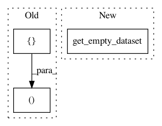

0df03347b9e26ef6153d1a1bed49991b51b09a9d,snips_nlu/tests/test_intent_classifier_featurizer.py,TestTfidfVectorizer,test_limit_vocabulary,#TestTfidfVectorizer#,1138
Before Change
language = "en"
utterances = [
(text_to_utterance("5 55 6 66 666"), [], [], []),
(text_to_utterance("55 66"), [], [], [])
]
After Change
def test_limit_vocabulary(self):
// Given
vectorizer = TfidfVectorizer()
dataset = get_empty_dataset("en")
utterances = [
text_to_utterance("5 55 6 66 666"),
text_to_utterance("55 66")
In pattern: SUPERPATTERN
Frequency: 3
Non-data size: 3
Instances
Project Name: snipsco/snips-nlu
Commit Name: 0df03347b9e26ef6153d1a1bed49991b51b09a9d
Time: 2019-01-16
Author: clement.doumouro@gmail.com
File Name: snips_nlu/tests/test_intent_classifier_featurizer.py
Class Name: TestTfidfVectorizer
Method Name: test_limit_vocabulary
Project Name: snipsco/snips-nlu
Commit Name: 0df03347b9e26ef6153d1a1bed49991b51b09a9d
Time: 2019-01-16
Author: clement.doumouro@gmail.com
File Name: snips_nlu/tests/test_intent_classifier_featurizer.py
Class Name: CooccurrenceVectorizerTest
Method Name: test_cooccurrence_vectorizer_should_persist
Project Name: snipsco/snips-nlu
Commit Name: 0df03347b9e26ef6153d1a1bed49991b51b09a9d
Time: 2019-01-16
Author: clement.doumouro@gmail.com
File Name: snips_nlu/tests/test_intent_classifier_featurizer.py
Class Name: CooccurrenceVectorizerTest
Method Name: test_limit_vocabulary